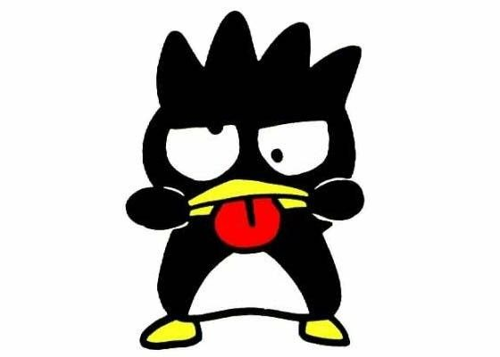
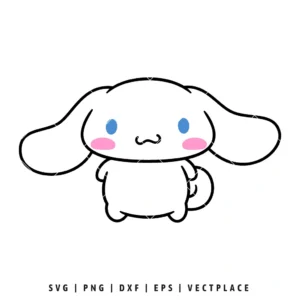

A Sanrio é uma empresa de entretenimento japonesa, fundada em 1960 por Shintaro Tsuji, que se especializou na criação de produtos e licenciamento de personagens com o estilo "kawaii" (fofo), com destaque global para a icônica Hello Kitty.
Com uma filosofia de que pequenos presentes trazem felicidade, a Sanrio expandiu seu alcance para todo o mundo, lançando uma vasta gama de produtos que vão desde artigos de papelaria a parques temáticos, consolidando-se como uma das maiores licenciadoras de marcas do planeta.
| Personagem | Personalidade | Valor | |
|
HELLO KITTY | AMÁVEL | AMIZADE |
|
MY MELODY | DOCE | HONESTIDADE |
| KEROPPI | DIVERTIDO | ENTUSIASMO | |
|  | BADTZ MARU | TRAVESSO | AUTENTICIDADE |
|  | CINNAMOROLL | MEIGO | BONDADE |
| POMPOMPURIN | ACOLHEDOR | HOSPITALIDADE | |
| KUROMI | REBELDE | INDIVIDUALIDADE | |
|
LITTE TWIN STARS | SONHADORES | ESPERANÇA |